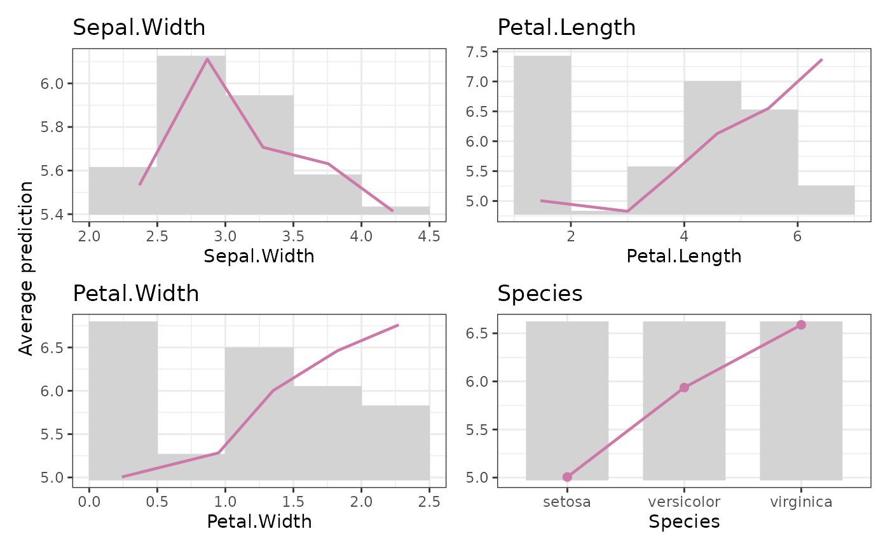

Calculates average predictions over the values of one or multiple features specified
by X. Shows the combined effect of a feature and other (correlated) features.
average_predicted(
X,
pred,
w = NULL,
x_name = "x",
breaks = "Sturges",
right = TRUE,
discrete_m = 13L,
outlier_iqr = 2,
seed = NULL,
...
)A vector, matrix, or data.frame with features.
A numeric vector of predictions.
An optional numeric vector of weights. Having observations with non-positive weight is equivalent to excluding them.
If X is a vector: what is the name of the variable? By default "x".
An integer, vector, or "Sturges" (the default) used to determine
bin breaks of continuous features. Values outside the total bin range are placed
in the outmost bins. To allow varying values of breaks across features,
breaks can be a list of the same length as v, or a named list with breaks
for certain variables.
Should bins be right-closed? The default is TRUE.
Vectorized over v. Only relevant for continuous features.
Numeric features with up to this number of unique values should not
be binned but rather treated as discrete. The default is 13. Vectorized over v.
If breaks is an integer or "Sturges", the breaks of a continuous
feature are calculated without taking into account feature values outside
quartiles +- outlier_iqr * IQR (where <= 9997 values are used to calculate the
quartiles). To let the breaks cover the full data range, set outlier_iqr to
0 or Inf. Vectorized over v.
Optional integer random seed used for calculating breaks: The bin range is determined without values outside quartiles +- 2 IQR using a sample of <= 9997 observations to calculate quartiles.
Currently unused.
A list (of class "EffectData") with a data.frame per feature having columns:
bin_mid: Bin mid points. In the plots, the bars are centered around these.
bin_width: Absolute width of the bin. In the plots, these equal the bar widths.
bin_mean: For continuous features, the (possibly weighted) average feature
value within bin. For discrete features equivalent to bin_mid.
N: The number of observations within bin.
weight: The weight sum within bin. When w = NULL, equivalent to N.
Different statistics, depending on the function call.
Use single bracket subsetting to select part of the output. Note that each data.frame contains an attribute "discrete" with the information whether the feature is discrete or continuous. This attribute might be lost when you manually modify the data.frames.
The function is a convenience wrapper around feature_effects().
Apley, Daniel W., and Jingyu Zhu. 2016. Visualizing the Effects of Predictor Variables in Black Box Supervised Learning Models. Journal of the Royal Statistical Society Series B: Statistical Methodology, 82 (4): 1059–1086. doi:10.1111/rssb.12377.
fit <- lm(Sepal.Length ~ ., data = iris)
M <- average_predicted(iris[2:5], pred = predict(fit, iris), breaks = 5)
M
#> 'EffectData' object of length 4, starting with 'Sepal.Width':
#>
#> bin_mid bin_width bin_mean N weight pred_mean
#> 1 2.25 0.5 2.368421 19 19 5.532860
#> 2 2.75 0.5 2.867188 64 64 6.111200
#> 3 3.25 0.5 3.277083 48 48 5.706627
#> 4 3.75 0.5 3.756250 16 16 5.631317
#> 5 4.25 0.5 4.233333 3 3 5.413218
M |> plot()
